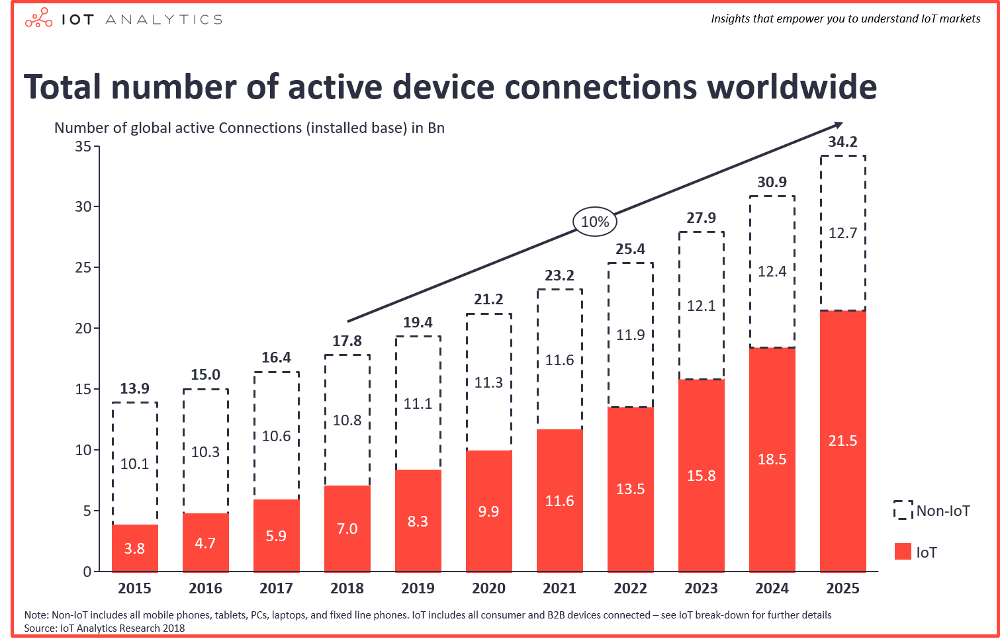

Web of Things
Autor: Jakub Kozłowski / jakubkozlowski.com
Plan prezentacji
1. Internet of Things
2. Zastosowanie IoT
3. Problemy systemów IoT
4. Web of Things
5. Architektura WoT
6. Podsumowanie
7. Źródła
Internet of Things
Czym jest Internet of Things?
Koncepcja bazująca na idei łączności między urządzeniami (M2M - Machine to machine).
Krótka historia
Pojęcie Internet rzeczy zostało pierwszy raz użyte w roku 1999.
Jednym z pierwszych przykładów wykorzystania IoT jest dystrybutor coca-coli na uniwersytecie Carnegie Melon University w roku 1980.
Zastosowanie IoT
Obszary zastosowań IoT
Inteligentne domy i budynki
Inteligentne miasta
Inteligentne systemy pomiarowe
Inteligentne środowiska (monitorowanie zagrożeń)
Inteligentne sieci zdrowia (IoMT)
I wiele, wiele innych...
Jak wielkie jest Iot?
Źródło: Rysunek przedstawiający porównanie urządzeń Non-IoT vs. IoT [1]
Standardy łącnzości urządzeń IoT

Zalety i wady IoT
Zalety systemów IoT
Dostęp do informacji
Komunikacja
Oszczędność
Automatyzacja
Wady systemów IoT
Prywatność & bezpieczeństwo
Złożoność
Malejąca liczba stanowisk pracy
Zależność
Ograniczenia
Web of Things

Architektura WoT
Warstwy WoT
Dostęp
Wyszukiwanie
Udostępnianie
Kompozycja
Podsumowanie
Fajne, ale niezbyt popularne!
Źródła
[1] Źródło: https://iot-analytics.com/state-of-the-iot-update-q1-q2-2018-number-of-iot-devices-now-7b/
[2] Źródło: https://iot-analytics.com/state-of-the-iot-update-q1-q2-2018-number-of-iot-devices-now-7b/
[3] Źródło: https://webofthings.org/2016/01/23/wot-vs-iot-12/
[4] Źródło: https://webofthings.org/2016/01/23/wot-vs-iot-12/
[5] Źródło: https://webofthings.org/2016/01/23/wot-vs-iot-12/